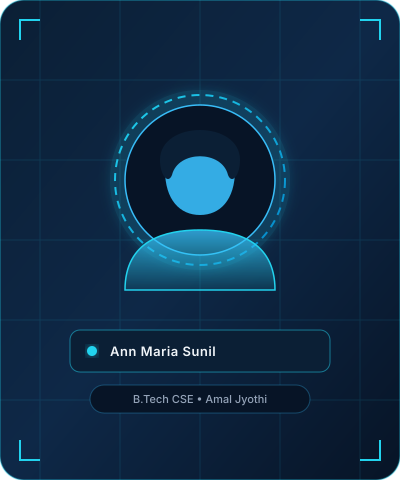

About Ann Maria Sunil
Computer science student, aspiring software engineer, and technology enthusiast building a strong foundation in modern computing.

Amal Jyothi College of Engineering
Kanjirappally, Kottayam, Kerala
Hello & Welcome!
I'm Ann Maria Sunil, a first-year Computer Science Engineering student at Amal Jyothi College of Engineering. I enjoy exploring technology, learning programming, designing digital experiences, and understanding how innovative solutions are built.
My interests include web development, artificial intelligence, machine learning, and UI/UX design. I'm continuously learning new technologies and developing my technical and creative abilities.
As an engineering student starting my undergraduate journey, I prioritize writing clean, maintainable code, understanding computational complexity from the ground up, and transforming creative ideas into responsive, user-friendly digital tools.
Core Areas of Interest
Web Development
Modern frontend interfaces, semantic HTML5, CSS architectures, responsive design, and lightweight JavaScript interactions.
Artificial Intelligence
Understanding heuristic search, natural language processing foundations, and intelligent agent designs.
Machine Learning
Exploring data patterns, algorithmic classification, Python scientific packages, and predictive statistical mechanics.
UI / UX Design
Designing user-centric visual hierarchy, subtle micro-interactions, dark mode aesthetics, and clean accessibility.
Personal & Academic Goals
Master Core Computer Science Foundations
Deepen algorithmic problem solving in C and Python, mastering data structures, memory management, and computational logic during my undergraduate tenure at Amal Jyothi.
Build High-Impact Full-Stack & AI Applications
Progressively scale from foundational student projects to deployable, open-source web and machine learning solutions that solve campus and community challenges.
Collaborate with the Global Developer Community
Actively participate in hackathons, open source repositories on GitHub, technical seminars, and peer-led engineering initiatives.